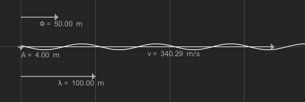

The red wave at the top is the resultant wave. The result of the two other waves added together.
In real life, the white waves would technically be on top of each other, but that wouldn't make for a good user interface, so the waves are shown separated.
Press the Add wave button to add a wave
Set the of a wave to 0 to remove it
The variables you can control, from the top are:
: the wave's phase shift
: the wave's amplitude. Note that down is positive in this simulation.
: the wave's velocity
: the wave's wavelength
The resultant wave is simply the sum of the other waves.
A wave is defined as a function of position and time.